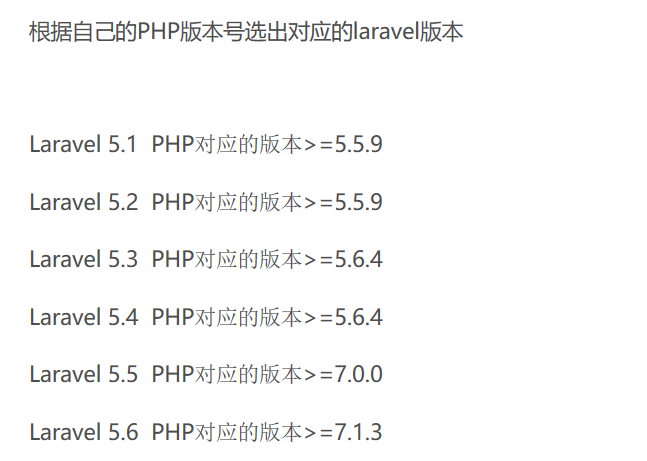

laravel: PHP Web开发框架
composer: PHP 的一个依赖管理工具。它允许你申明项目所依赖的代码库，它会在你的项目中为你安装他们。
官网地址直接下载，安装按照安装程序步骤直接来就可以了，一直点 Next。安装完成后可以cmd使用命令行 composer -v ，成功返回版本信息则安装成功。
1. 根据php版本选择对应版本的laravel版本。版本选择参考博客：

2. 选好版本后，有两种安装方式：
3. 方式一：cmd进入wamp的www目录，运行命令：composer create-project laravel/laravel=5.5.* demo --prefer-dist
该命令会在www目录下创建远程下载的laravel项目框架，并下载项目依赖的库，demo为项目名称。
4. 方式二：在网站直接下载laravel压缩包，解压到wamp/www/下，然后cmd进入laravel目录下，运行命令:composer install 来安装laravel所依赖的代码库。
5.两种方式都无法避免的问题是，安装依赖库十分缓慢，所以我们可以添加下载源为国内源加快速度，具体操作参考博客 composer下载安装laravel太慢解决方法。
7. 安装完成后，可以发现 wamp/www/laravel/项目下出现了vendor文件夹，大概就是安装成功了，最后进入浏览器，输入 127.0.0.1：80/laravel/public访问，出现下列页面则安装成功！若访问页面出错，参考这篇博客最后的问题解决看一下，主要是更新和key两种问题。
7. 最后，可以为项目单独设置访问路径，在/wamp/bin/apache/apache2.4.23/confextra/下的httpd-vhosts.conf文件中增加如下信息，设置完成重启wamp，就可以通过127.0.0.1：81访问laravel项目了。
<VirtualHost *:81>
ServerName localhost
ServerAlias localhost
DocumentRoot E:/wamp/www/laravel/public/
<Directory "E:/wamp/www/laravel/public/">
Options +Indexes +Includes +FollowSymLinks +MultiViews
AllowOverride All
Require local
</Directory>
</VirtualHost>
~完结，撒花*★,°*:.☆(￣▽￣)/$:*.°★* 。